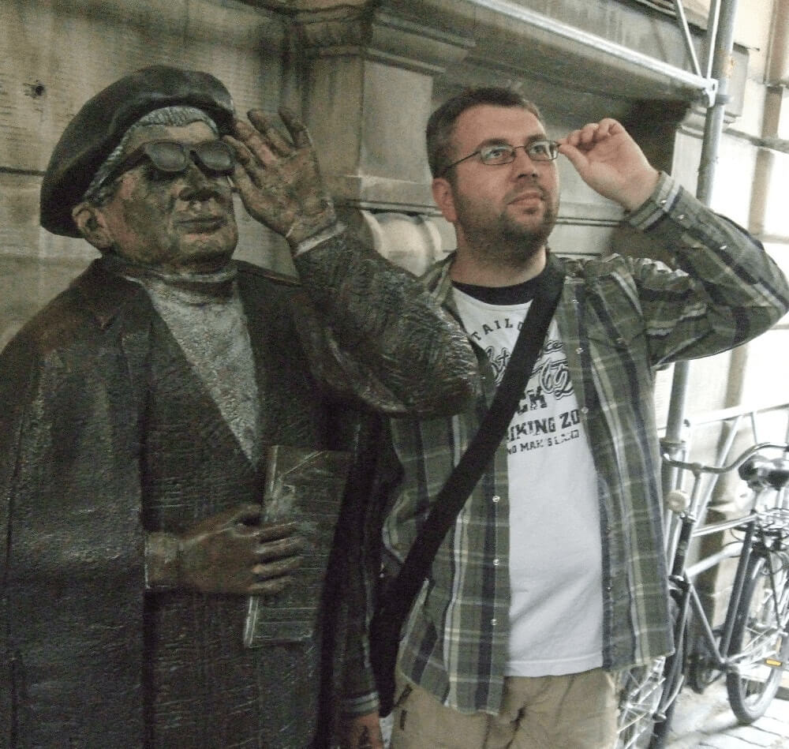

<!-- Modal 7 -->
<div class="portfolio-modal modal fade" id="portfolioModalIlmov" tabindex="-1" role="dialog" aria-hidden="true">
  <div class="modal-dialog">
    <div class="modal-content">
      <div class="close-modal" data-dismiss="modal">
        <div class="lr">
          <div class="rl"></div>
        </div>
      </div>
      <div class="container">
        <div class="row">
          <div class="col-lg-8 mx-auto">
            <div class="modal-body">
              <h2 class="text-uppercase">Владимир Ильмов</h2>
              
              <p>Закончил ЯрГУ им Демидова в 2004 году.<br>
              До 2000 года писал программы на С++/С под платформы Amiga, MS-DOS. В 2001 году перешёл на web, верстать под Netscape и изучал DHTML. Потом perl и php.<br>
              Профессионально Java занимаюсь с 2004 года, в основном J2EE.<br>
              Участвовал в разработке нескольких версий личного кабинета Beeline (https://uslugi.beeline.ru и позднее https://my.beeline.ru).<br>
              В 2007 году разработал систему предварительной записи и управления очередью для ГИБДД и ФМС в г .Ярославль (http://svc.76.gibdd.ru).<br>
              Интересуюсь сетевыми технологиями, настройкой серверов и распределенными системами.<br>
                Живу в Амстердаме.</p>

              <br/>
              <button class="btn btn-primary" data-dismiss="modal" type="button">
                <i class="fa fa-times"></i>
                Назад
              </button>
            </div>
          </div>
        </div>
      </div>
    </div>
  </div>
</div>
